Scene 1Warm-Up
▶ Start hereHow your Wonder Films lessons work1-minute videoOpen ▾
🎯 TodayI can…
- explain ways that human actions harm or help an ecosystem.
- use evidence from a case study to identify resources that were changed.
- describe at least one conservation solution that helps organisms meet their needs.

🔎 Mystery specimenWhat did the waves leave behind?
What to do: Press Inspect specimen. Move the magnifying lens over the beach finds, then tap 3 things you notice.
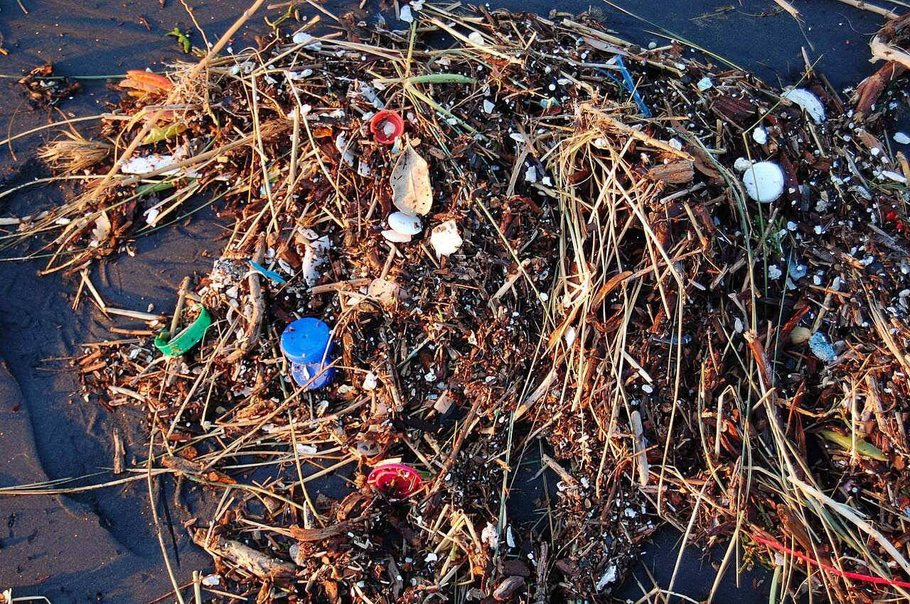
📚 Word WallWords scientists use
What to do: Tap or click each card to flip it and read what the word means. Tap 🔊 to hear the word.
Scene 2The Lesson
🌱 Part 1Humans Use Ecosystem Resources
Every day, people use things that come from ecosystems: water, wood, soil, food, and land. We need these resources to live, just like other animals do.
When people use resources, they often change the habitat for plants and animals that already live there. Even a small change, like a new path through the woods or a parking lot next to a creek, can change what living things can find.
🎞️ Put the scenes in orderHow can a bottle cap get from a parking lot to the sea?
What to do: Drag each photo into the film strip, from first to last. You can also tap a photo, then tap a frame. Get the order right and your strip becomes a movie.
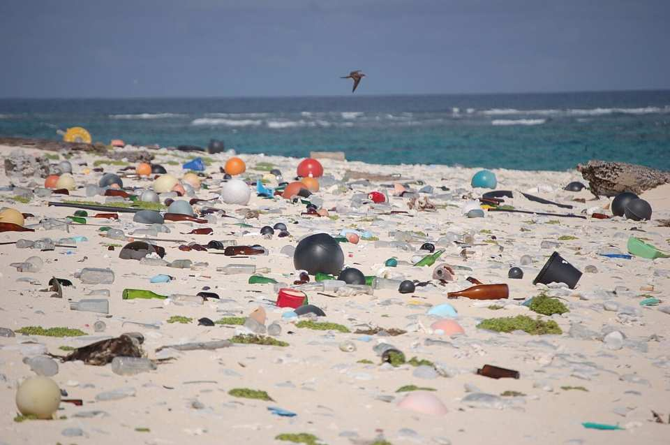
One bottle cap is so small. Can one person's dropped cap really end up in the sea?
⚠️ Part 2When Human Actions Harm
Some human actions make it harder for living things to survive. Trash and pollution dirty the water. Cutting down forests takes away shelter. Paving land takes away space, and rain runs off the pavement instead of soaking in.
The impact doesn't have to be huge to matter. One pond full of litter can drive away fish, frogs, and the birds that eat them.
🧪 The Soak TestWhere does the rain go?
What to do: Follow the steps one at a time. You will pick, test, and then explain.
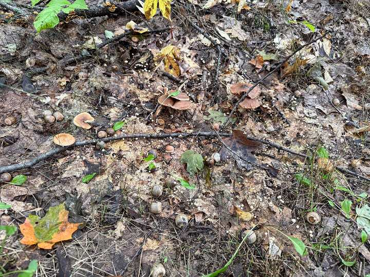
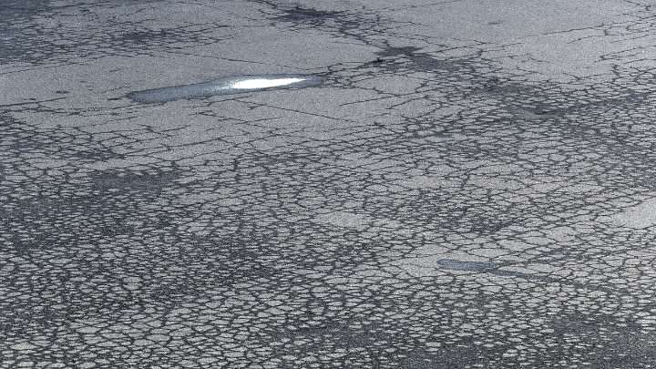
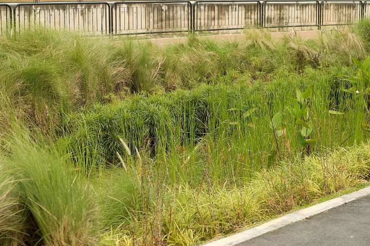
💚 Part 3When Human Actions Help
People can also protect and restore ecosystems. Planting native wildflowers gives bees food. Picking up trash clears harmful things from water and soil. This work is called conservation.
A solution that only looks nice isn't really working. It has to give back food, water, shelter, or space. In the Florida Everglades, people are bringing back fresh water that canals blocked, and wading birds are starting to return to some areas.
🗺️ Florida's water tripRide Florida's water south, from the Kissimmee River to Florida Bay
What to do: First, make a prediction. Then brush the glowing stop: drag across it (or tap it again and again) until the place shows.
When people change one part of a river, what do you think happens farther south, downstream?
RiverLake
OkeechobeeThe
EvergladesFlorida
Bay
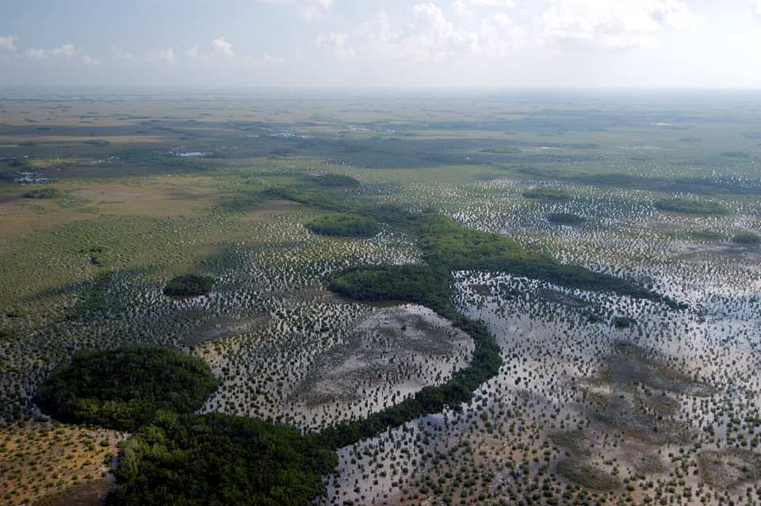
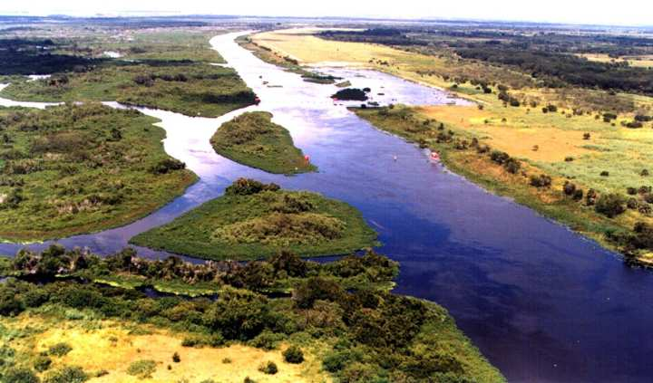
Stop 1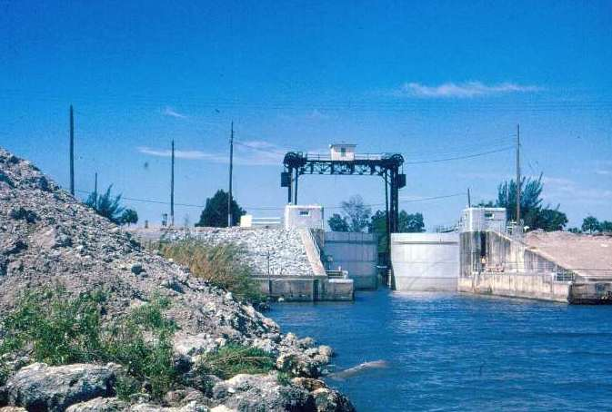
Stop 2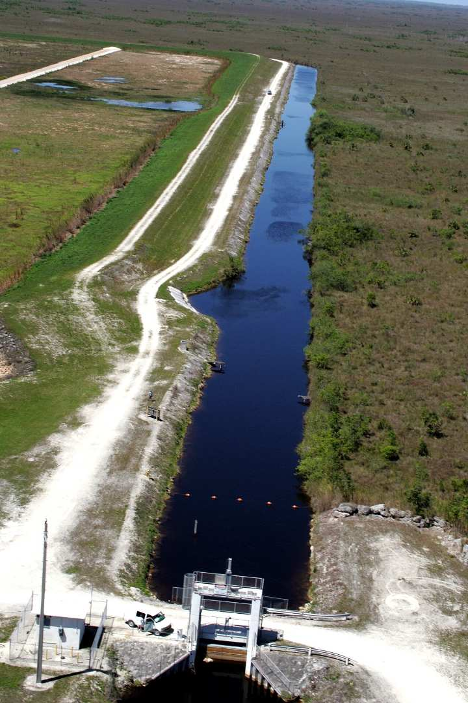
Stop 3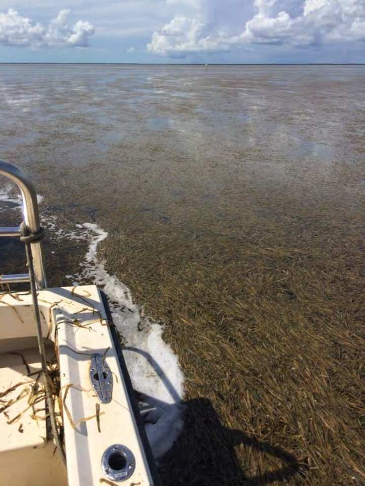
Stop 4Ecosystems are connected. A change in one place can change resources for living things far away. Now people are putting the curves back in the Kissimmee River and building bridges so water can flow south again.
A town replaces a field of wildflowers with a neat green lawn. It looks nicer. Does it help bees and butterflies?
The pink birds that need shallow water
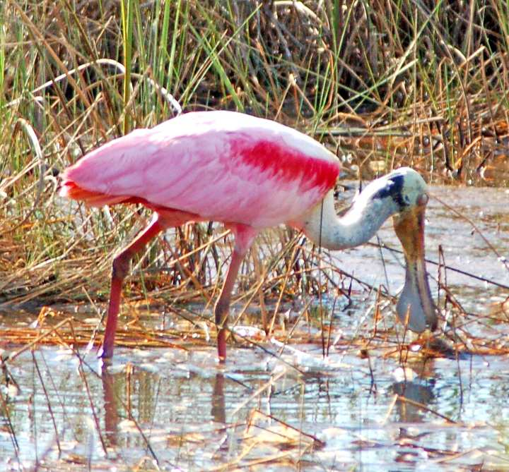
Roseate spoonbills sweep their spoon-shaped bills side to side through shallow water to catch small fish and shrimp. When canals drained the Everglades, they lost many feeding spots.
Now Florida and the U.S. government are working on one of the biggest wetland restorations ever, sending fresh water south again. Scientists count the birds each year to see if the plan is working.
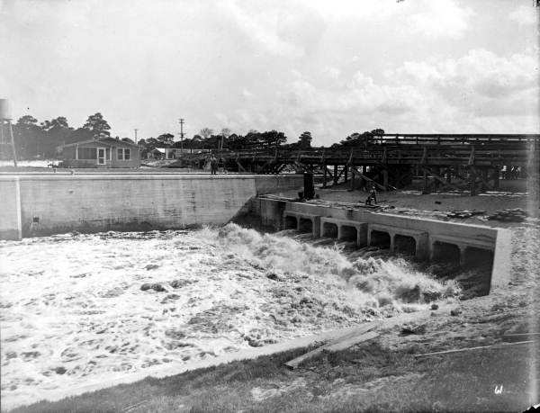
🗂️ Part 4Harm or Help? Open the Case Files
What to do: Pick 3 case files, one at a time. Tap a clue, then pick what it shows. Predict harm or help, and watch the place today appear.
| Case | My observation | The resource | Harm or help? | My evidence |
|---|
🌍 Rebuild the placeUse your evidence to rebuild the place OPTIONALOpen ▾
What to do: Pick one you solved. Pick the place it points to, then pick the living things that belong there.
Pick one from your chart and explain it.
Start with: "Case __ shows…"
Scene 3Self-Check
A family plants native wildflowers to attract bees and butterflies. This is an example of…
A new road is built through a forest, and a long strip of trees is cleared. Which resource is most directly affected for the animals that lived there?
After a storm, oily runoff from a parking lot flows into a stream. Small invertebrates (tiny animals with no backbone) that fish eat begin to disappear. Which statement best explains why this is a problem?
Scene 4Assignment
🔍 Part ASort harm and help
What to do: Read each one. Pick the best answer, or type your answer.
1. Write one human action that harms an ecosystem and one that helps it. Label each one harmful or helpful.
2. Dirty water from a factory flows into a river. Which resource is most affected?
3. Trees are cut down to build houses. Which resource do the birds that nested there lose most?
4. Name one living thing affected by the harmful action you wrote in question 1. What does it now struggle to find?
🚀 Part BShort answer
What to do: Answer in complete sentences. Use your science words.
1. How can pollution change an ecosystem? Describe one way pollution takes away or damages a resource that living things depend on.
2. A neighborhood wants to restore a damaged pond habitat. Describe two things they could do, and for each one, say which resource it would help restore.
✍️ Write and explainWhich human action has the biggest impact?
What to do: Pick one from your evidence chart. Answer the three questions. Use at least one of the science words under the boxes.
Start with: "I think the biggest impact is… because…"
Start with: "I know this because in Case __, I noticed…"
Start with: "This makes sense because organisms need…"
🎨 Part CDraw and label
What to do: Draw one place before and after a human action. Label what changed, and one way to help.
🎬 Your question from Scene 1Can you answer it now?
What do you still wonder about? Write your question here. Then answer it.
📋 My answersEverything you wrote, in one place
(Your answers show up here as you write.)
How to turn in: Copy your answers and paste them into the Canvas assignment. Or download the file and upload it. Then press Save my drawing in Part C and upload your drawing too.
✅ Checklist
What to do: Tap each item when it is done. Items you finish on the page check themselves.
- My evidence chart has 3 cases and my explanation.
- Part A: all four questions.
- Part B: questions 1 and 2.
- Part C: my drawing and both labels.
- Write and explain, with at least one science word.
🎬 Premiere my human-impact storyYour exhibit
What to do: Check your exhibit. Pick the one you wrote about, add your first name, then press Premiere film.
I observed…
I think it was…
My evidence…
It tells us…
🎞️ This film's frames
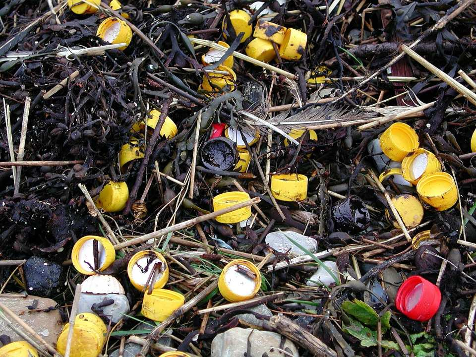
Rain to the sea
The Soak Test
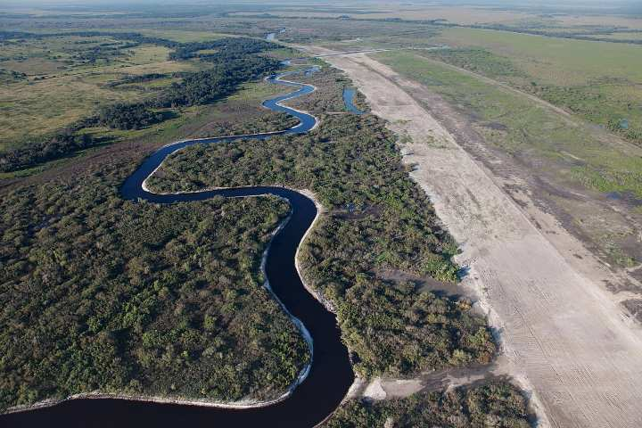
Florida's water trip
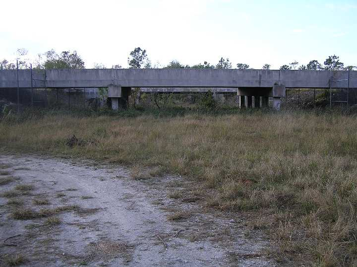
Harm or help?
Earn all four frames in the Lesson, then finish the checklist.
🔜 Coming up next22.02 · Investigation: Human Impact Case Study
Next time, dig into one real case study and decide whether a solution really helps.
Photo and music credits
- Rain garden overview, Rogersoh, CC BY-SA 3.0
- Snowy Plover on the beach, Florida (123666627), Lisa Mcgloin, CC BY 3.0
- Forest floor with small mushrooms and a fallen orange maple leaf, Potawatomi …, Z3lvs, CC0
- Macro-déchets sur la plage de Kersiguénou (Ifremer 00945-105643 - 54530), Gregory Rocher, CC BY 4.0
- Cracked asphalt after rain at blue hour, W.carter, CC0
- Early morning Smathers Beach Key West, Juliancolton, Public domain
- (Water Runoff 2) 412-DSP-2-Runoff 212.jpg - DPLA - 94d792e88c17caeff5a5e4302b…, Environmental Protection Agency. 12/2/1970, Public domain
- Cape Canaveral Space Force Station Beach Clean-up (7158632), U.S. Space Force photo by Airman 1st Class Thomas Sjoberg, Public domain
- LITTER LEFT BY VISITORS IN THE TAMIAMI CANAL AREA BESIDE EVERGLADES NATIONAL …, Fred Ward, Public domain
- Frog and waterlily at Trustom Pond (12300), Rhododendrites, CC BY-SA 4.0
- Strip of road running through the forest in Burundi, Original uploader (WT-fr) Burundi at French Wikivoyage, Public domain
- I-75 North at Florida SR 29 Aerial, formulanone, CC BY-SA 2.0
- Bee on a Coneflower (186355411), Paul Stein from New Jersey, USA, CC BY-SA 2.0
- Monarch butterfly on blazing star (54763664754), U.S. Fish and Wildlife Service - Midwest Region, Public domain
- Stormdrainrunoff, Evangelidis, CC BY-SA 3.0
- Rain Garden (15455930908), USEPA Environmental-Protection-Agency, Public domain
- Panther Crossing, NPSPhoto, S.Zenner (9099875473), Everglades NPS from Homestead, Florida, United States, Public domain
- Panther underpass, John D. Lloyd, CC BY 2.5
- No Dumping, Drains to Stream - Lexington, MA - DSC04417, Daderot, CC0
- Photo by USACE Kissimmee River Restoration backfilled canal and restored mean…, U.S. Army Corps of Engineers, Everglades Restoration, Kissim, Public domain
- Lake Okeechobee, Fl295 at English Wikipedia, Public domain
- Roseate Spoonbill, Road to Pa-hay-okee Overlook, Everglades National Park, Fl…, Ken Lund from Reno, Nevada, USA, CC BY-SA 2.0
- FKNMS - pufferfish seagrass (28164201941), National Marine Sanctuaries, Public domain
- Canal in the Everglades Drainage District 1915, Unknown authorUnknown author, Public domain
- Kissimmee River canal section, Tony Santana, U.S. Army Corps of Engineers, Public domain
- Herbert Hoover Dike Construction 1968 3 of 3, Unknown authorUnknown author, Public domain
- Levees, Dikes and Dams (14), NPSPhoto, R. Cammauf (9250141478), Everglades NPS from Homestead, Florida, United States, Public domain
- Rafts of dead seagrass in Florida Bay, South Florida Water Management District, Public domain
- Starbucks, Crawfordville, Florida, The Bushranger, CC BY-SA 4.0
- Puma concolor coryi Florida panther, U.S. Army Corps of Engineers, Public domain
- Gateway Bklyn South td (2018-08-12) 03 - Sunshowers, Tdorante10, CC BY-SA 4.0
- Beach strewn with plastic debris (8080500982), U.S. Fish and Wildlife Service Headquarters, Public domain
- Transition from Sawgrass to Coastal Habitat, NPSPhoto (9250299462), Everglades NPS from Homestead, Florida, United States, Public domain
- ISS-40 Florida, most of the peninsular portion, NASA, Public domain
- Plastic Ocean (4408273247), Kevin Krejci from Near the Pacific Ocean, USA, CC BY 2.0
- Roseate Spoonbill, NPSPhoto (9101514610), Everglades NPS from Homestead, Florida, United States, Public domain
- Music: Antonio Vivaldi, Spring (from The Four Seasons), I. Allegro, played by the Modena Chamber Orchestra, public domain (Musopen, via Wikimedia Commons).
- Opti the owl: Optima Academy. Sound effects are made by the page. The film's rewind is a story told with real photos from different places. The runoff movie, the soak test and the water trip are models; every place photo is real. The four order photos come from different places. The blue evening light in the parking-lot tray photo was toned down to gray.